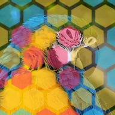

육각 배열

레이어를 1~3가지 색상으로 채운 육각형 격자로 덮습니다. 육각형 사이에 간격이 있고 가장자리는 부드럽습니다.
설정
| 설정 | 유형 | 범위 | 기본값 |
|---|---|---|---|
| 오프셋 | 점 (X, Y) | -4000 px~4000 px | 0 px, 0 px |
| 크기 | 숫자 | 4~2000 | 80 |
| 늘이기 | 숫자 | 0.1~10 | 1 |
| 각도 | 각도 | -3600°~3600° | 0° |
| 색상 수 | 선택지 | 1개, 2개, 3개 | 3개 |
| 색상 1 | 색상 | – | #FF3A6E |
| 색상 2 | 색상 | – | #35D0FF |
| 색상 3 | 색상 | – | #FFD23F |
| 불투명도 | 숫자 | 0~1 | 0.5 |
| 블렌딩 | 선택지 | 일반, 곱하기, 스크린, 오버레이, 소프트 라이트, 하드 라이트, 더하기, 어둡게, 밝게, 차이, 컬러 닷지, 컬러 번 | 일반 |
| 간격 | 숫자 | 0~1 | 0.1 |
| 페더 | 숫자 | 0~1 | 0.1 |